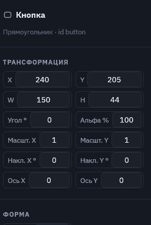
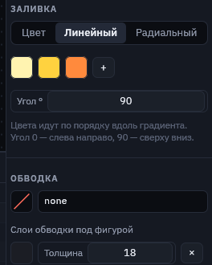
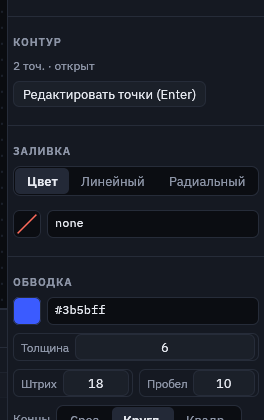
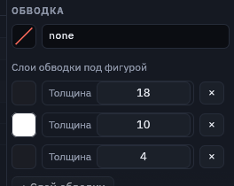
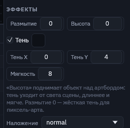
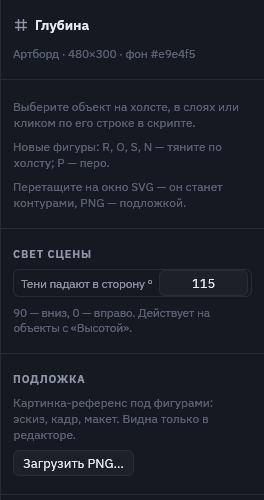
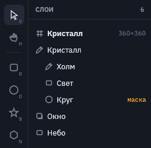
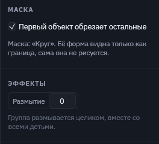
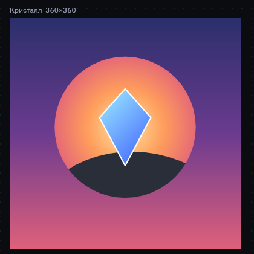

Панель свойств
Справа показаны числа и цвета выбранного объекта. Каждая правка здесь сразу меняет нужное число в скрипте, поэтому текст и картинка всегда совпадают.
Числа можно тянуть. Зажмите мышь на подписи поля («X», «Угол °») и ведите вправо или влево: значение меняется плавно. Можно и просто кликнуть в поле и ввести число.
Ромб справа от поля появляется в режиме Animate: он ставит или снимает ключ этого свойства на текущем времени. Подробнее — на странице «Анимация».
Трансформация и форма

- X, Y — центр объекта на артборде (
at x y). - W, H — ширина и высота (
size w h). - Угол ° — поворот по часовой стрелке (
rot). - Альфа % — непрозрачность (
opacity). У группы она действует на всех детей. - Масштаб X/Y — растяжение без изменения самих размеров (
scale), удобно для «сплющивания» при прыжке. - Накл. X/Y — наклон в градусах, как CSS
skew. - Ось X/Y — точка, вокруг которой идут поворот, наклон и масштаб (
pivot). Например, флажок качается вокруг древка, если ось сдвинута к его краю.
В разделе «Форма» задаются скругление углов (одно число или «По углам» — каждый угол отдельно), а у звезды и многоугольника — число лучей и внутренний радиус.
Заливка и градиенты

Переключатель Цвет / Линейный / Радиальный:
- Цвет — одна заливка: палитра по клику на квадрат или HEX-код в поле рядом.
- Линейный — цвета идут по прямой под заданным углом: 0 — слева направо, 90 — сверху вниз.
- Радиальный — цвета идут от центра к краю.
Квадраты — это цвета градиента по порядку, «+» добавляет ещё один. Градиент растягивается на всю фигуру.
Обводка, пунктир и слои обводки

- Цвет и толщина обводки.
none— без обводки. - Штрих и пробел делают линию пунктирной (
dash 18 10). - Концы линии: срез, круглые, квадратные. Углы: острые, круглые, скошенные.
- Слои обводки под фигурой — несколько обводок друг под другом, широкие снизу. Так делают заголовки игр и цифры урона: тёмный толстый контур, а поверх тонкий светлый.

title.msc.Эффекты: размытие, высота, тень, наложение

- Размытие — настоящее гауссово размытие объекта. У группы размывается всё её содержимое вместе: так легко сделать расфокусированный фон.
- Высота поднимает объект над артбордом. Тень появляется сама и уходит в сторону от света сцены, и чем выше объект, тем тень дальше и мягче. Это удобно для интерфейса: «нажатая» кнопка — высота 2, «наведённая» — 12.
- Тень — ручная тень, как CSS
box-shadow: сдвиг X/Y, мягкость и цвет с прозрачностью. Мягкость 0 даёт жёсткую тень, удобную для пиксель-арта. Если у объекта есть и высота, она добавляется к ручной тени. - Наложение — режим смешивания с тем, что под объектом: multiply, screen, overlay и ещё 13, как CSS
mix-blend-mode.
Размытие, высота и тень анимируются ключами, как позиция или цвет. В редакторе и при экспорте картинка одинаковая.
Свет сцены и подложка

Когда ничего не выбрано, панель показывает настройки артборда.
- Свет сцены — в какую сторону падают тени от объектов с «Высотой»: 90 — вниз, 0 — вправо, 180 — влево. Один угол на всю сцену, поэтому все тени согласованы. В скрипте он записывается в строке артборда:
artboard "Меню" 480x300 light 120. - Подложка — картинка-референс под фигурами, видна только в редакторе.
Группы и маски

Группа объединяет объекты: её позиция, поворот, масштаб и прозрачность действуют на всех детей.
Галочка «Маска» у группы превращает первый объект группы в форму окна: остальные дети видны только внутри неё, а сама маска не рисуется. В слоях такой объект помечен словом «маска».


gem.msc: небо, солнце и холм видны только внутри круга-маски.